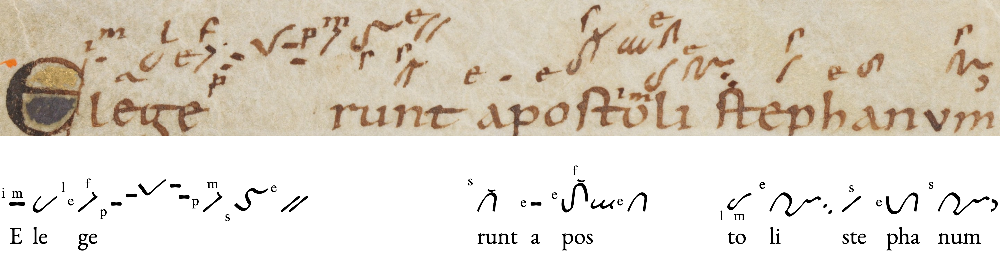

KI und Neumen
Projekte der Digitalen Musikwissenschaft in Tübingen
Morent / Böttiger / Pfeffer
Verovio
MEI-Rendering von adiastematischen Neumen in Verovio
MEI zum Bearbeiten klicken unvollständig
Verovio

eChant
eChant: Neumeneditor
eChant
eChant: Handschrift → MEI-Kodierung
Die Erkennung überträgt eine Seite in MEI, verknüpft mit dem Faksimile. Korrigiert wird im Editor.
- Segmentierung, Texterkennung mit Kraken und dem TRIDIS-Modell (Torres Aguilar 2024), Klassifikation und Gruppierung der Neumen, Zuordnung zu Silben.
- Ausgehend von handannotierten Neumen werden 87,3 % der richtigen Silbe zugeordnet (68 Zeilen). Eine Evaluation der Pipeline als Ganzes steht noch aus.
- Referenzdaten: 2.509 Annotationen auf 17 Seiten und 4.923 von Hand geprüfte Tintenkomponenten.
1.545 Prompts / 264 Sitzungen / 30,7M Tokens / 120.000 Codezeilen
- Coding-Assistenten erlauben direkte Umsetzung und Weiterentwicklung von noch nicht konkreten Ideen
- Mehrmonatige Entwicklungszeiten können auf wenige Tage reduziert werden
- Sauberer Quelltext, mit richtigen Prompts kaum „AI Slop“
- Geschlossenes System: keine vollständige Kenntnis des Quelltextes mehr. Weiterbearbeitung erzwingt Weiterverwendung von KI-Coding-Assistenten.